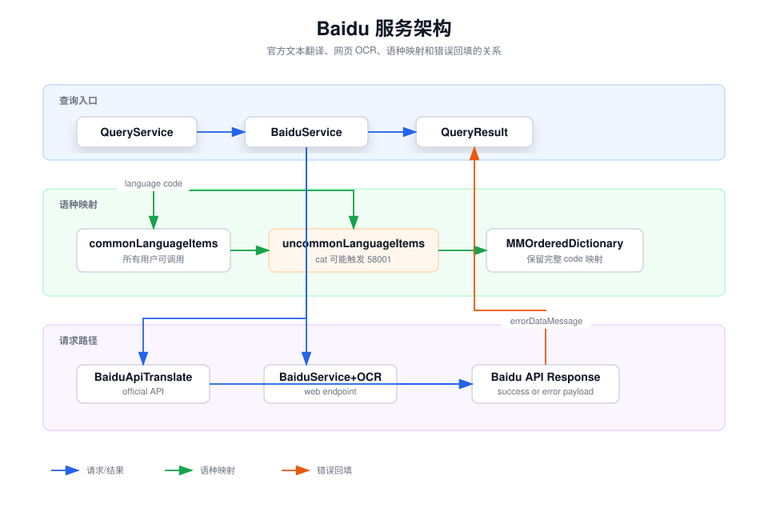

Baidu 服务目录概览
本目录维护百度翻译服务的配置、官方文本翻译请求、网页 OCR 请求、 响应模型和服务语言码映射。
职责边界：
BaiduService 暴露 Easydict 的查询服务能力，
BaiduApiTranslate 负责官方
api/trans/vip/translate 请求签名和结果回填，
BaiduApiResponse 定义成功与错误响应结构，
BaiduService+OCR 维护网页 OCR 端点。

语种分类
百度文本翻译文档把语种分为常见语种和完整语种表。 常见语种列表内的语种所有用户均可调用；完整语种表中的非常见语种， 仅企业已认证的尊享版用户可调用。
Language.catalan 对应百度代码 cat，
属于官方完整语种表中的非常见语种。普通用户请求该语种时，
百度可能返回 58001 或
INVALID_TO_PARAM。
supportLanguagesDictionary() 仍返回常见语种和非常见语种的
合并结果，保持 Easydict 的语言码映射完整性。当前代码只做分类和注释，
不根据账号类型隐藏语种，也不修改请求路径。
调试入口
-
文本翻译失败先看
BaiduApiTranslate.translate的请求参数、 百度错误响应和QueryError.errorDataMessage。 -
语言码问题先看
BaiduService.supportLanguagesDictionary()， 再确认百度文档中的常见/非常见语种分组。 -
OCR 问题走
BaiduService+OCR，它使用网页端点， 不等同于官方文本翻译 API 的权限规则。